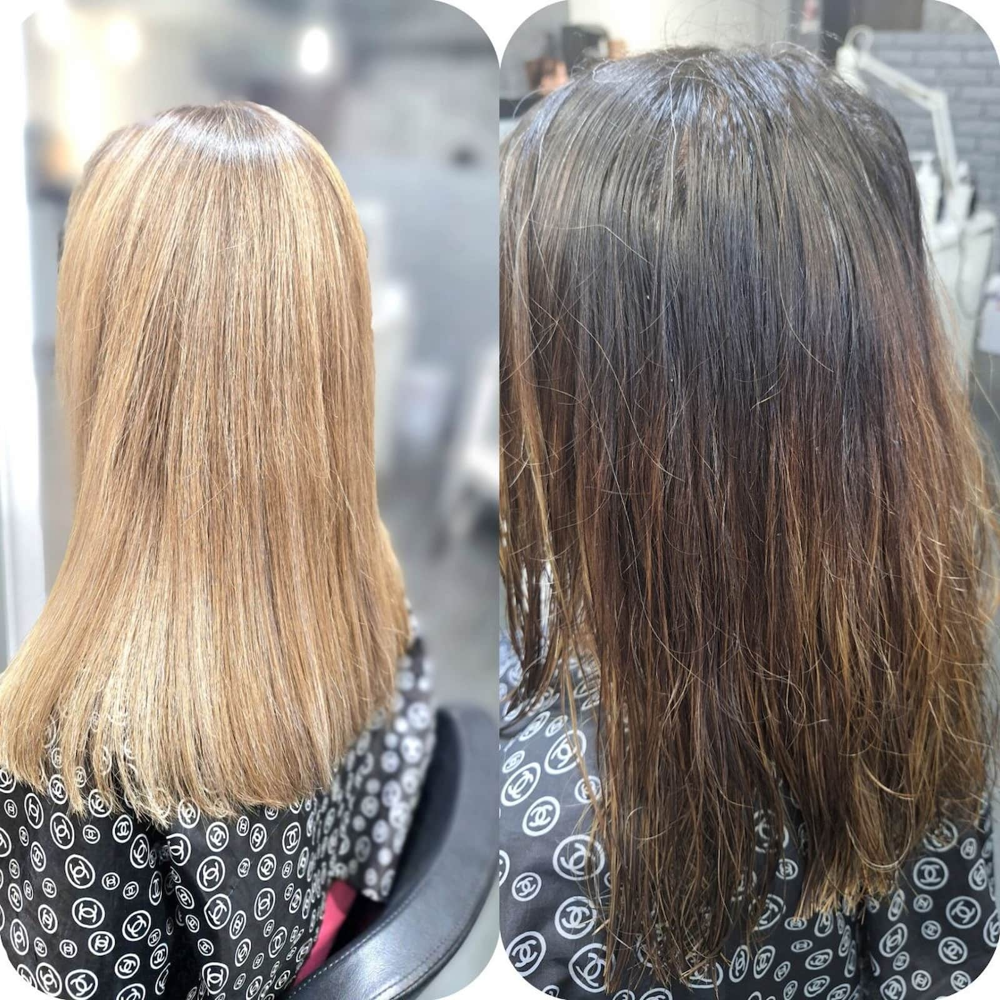
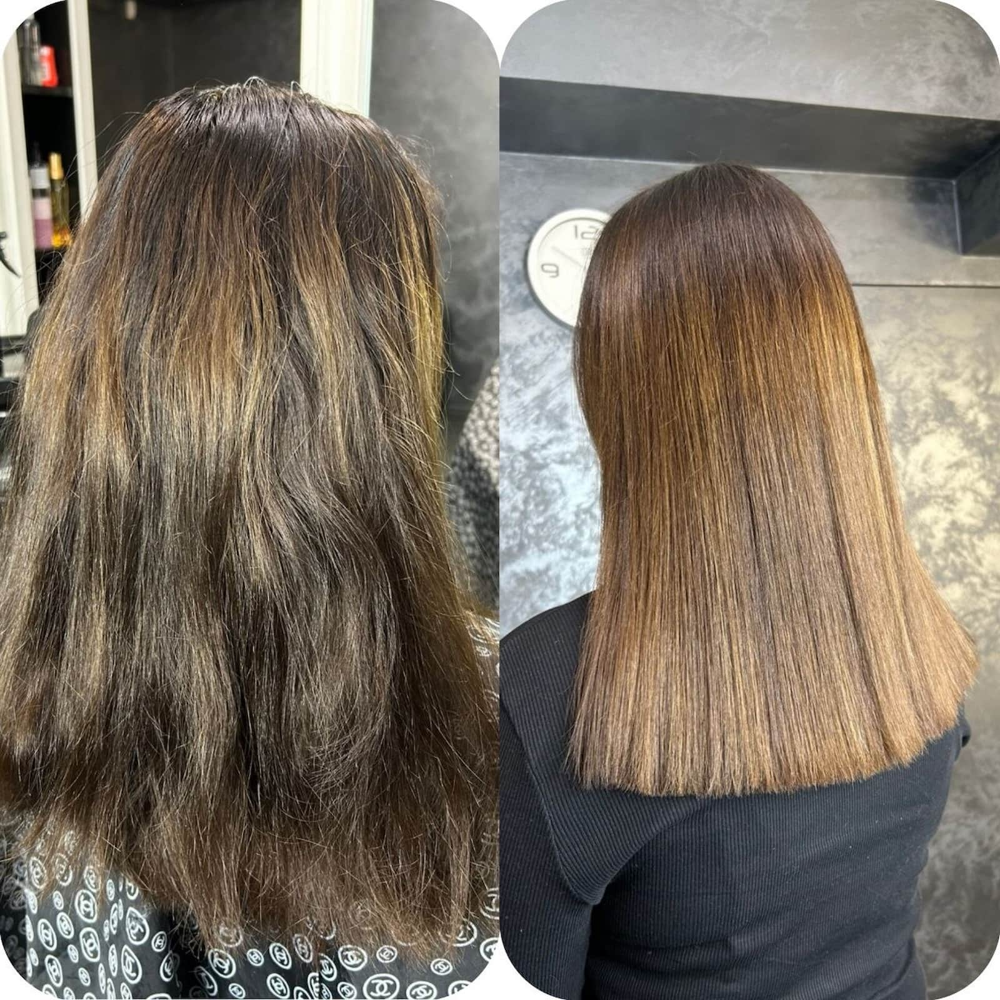
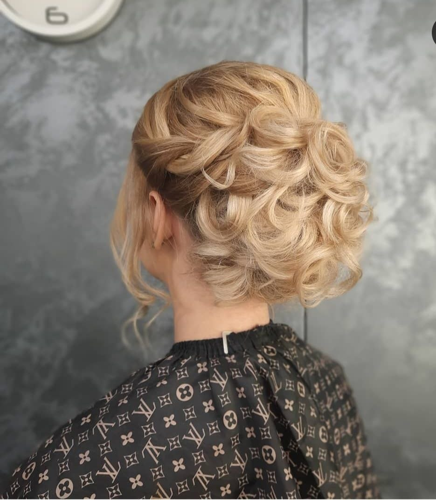

Реконструкція волосся
Відновлення структури та щільності волосся після фарбування, хімії та вигорання.
від 1 200 ₴
Студія · Ірина Ковальова
З любов’ю до волосся та краси. Відновлення, фарбування, стрижки та зачіски для особливих моментів.
ЗаписатисяПро студію
Ми працюємо з індивідуальним підходом: спершу діагностика стану волосся, потім план догляду та лише після цього зміна образу. Тут ніхто не поспішає, а результат тримається довго.
Послуги
Відновлення структури та щільності волосся після фарбування, хімії та вигорання.
від 1 200 ₴
Гладкість і блиск волосся після процедури ботоксу.
від 1 500 ₴
Різні техніки фарбування для створення унікального образу.
від 1 800 ₴
Оновлення образу за допомогою сучасних технік стрижки.
від 800 ₴
Весільні, вечірні та святкові зачіски для будь-якої події.
від 1 200 ₴
Результати
Процедури
Інтенсивне відновлення волосся з глибоким живленням та відновленням структури.

Відновлення волосся з використанням кератину для гладкості та блиску.

Процедура для гладкості та відновлення волосся.

Зачіски
Зачіска, що підкреслить ваш образ і настрій особливого дня.

01 Весільна колекція
Ніжні та довговічні образи для нареченої: від класичних зачісок до сучасних локонів.
Записатися
02 Вечірня колекція
Елегантні вечірні образи для будь-якого заходу: від класичних укладок до сучасних локонів.
Записатися
03 Святкова колекція
Святкові укладки для будь-якого торжества: від ніжних локонів до складних плетінь.
ЗаписатисяВідгуки
★★★★★
Волосся після реконструкції стало живим і блискучим. Дуже дбайливе ставлення.
Олена К.
★★★★★
Фарбування пройшло чудово! Колір тримається довго і виглядає натурально.
Марія П.
★★★★★
Весільна зачіска була просто ідеальною! Трималася весь день.
Анна С.
Запис і контакти
| Понеділок – П’ятниця | 09:00 – 20:00 |
|---|---|
| Субота | 10:00 – 18:00 |
| Неділя | Вихідний |